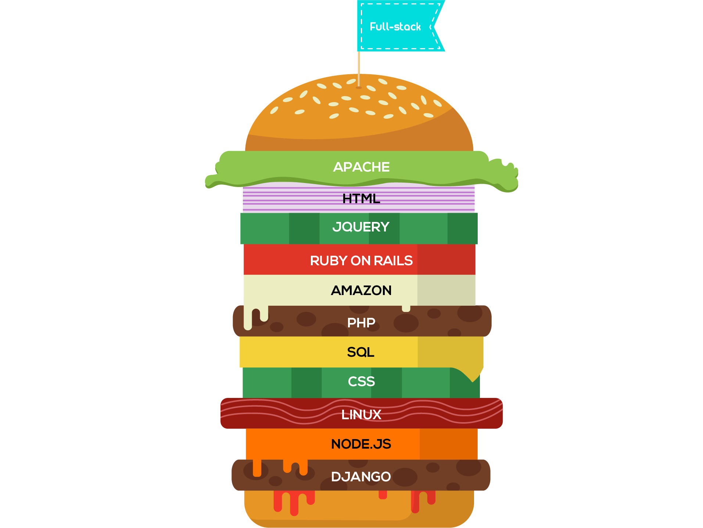

Video 2: Full Stack vs. Front-End (Lynda)
Getting Started
Types of web developers
Front-end: HTML, CSS, JavaScript
Back-end: Most things happen in background
Web Stack: Collection of tools used for web development
All developers need to know some front/back, but specialize
The role of HTML
HyperText Markup Language
Not meant to be seen linearly, must be linked
Information Architecture - how to structure website
Markup Language: tags to set up structure
DOM: Document Object Model, outline of content
If DOM encoded incorrectly, whole website breaks
HTML Essential Training
The role of CSS
User Experience: look and feel of website
User Interface: functionality of site
Cascading Style Sheets = rules on how DOM is visualized
Priority of rendering
Colors, fonts, designs
Zen Garden = same HTML code, presented differently
Graphic design, more complex features in language
Content must be responsive
CSS Core Concepts
The role of JavaScript
Language for interacting on a webpage
Handles events, loading/unloading media
Browser support issues, might be outdated
Typescript, Go = supersets of JavaScript
NodeJS, Webpack, GulpJS = to optimize code
Javascript essential training
Back end essentials
Database to manage user information
Stack varies by company, depends on needs
Study at least one stack and language
Recommends at least PHP and SQL
Begin with PHP, explore Node.js, .NET, Ruby on Rails
Servers
Servers b/c server information
Basic = send HTML, CSS, JavaScript files
Build pages customized based on parameters
Back end = handle serving systems
Front end = design + functionality
Each language uses different syntax, commands slightly different
Linux = more common, less expensive
Windows servers = popular with large companies, good development environment
Linux = open source!
Install PHP and MySQL server on own workstation
Install Apache, MySQL, PHP
Build website with Node.js and Express.js
Server-side scripting
Code that runs on a server
PHP, NodeJS, .NET, ASP.NET, Ruby, PHP, Python
Windows = ASP.NET or .NET
Database Languages
Query databases for information
Variant of Relational Database Management System / RDBMS called Sequel, or SQL
MS SQL, MySQL, Oracle, PostGresQL
Foundations of Programming: Data Structures
NoSQL = records with no specific structure
Google’s Big Table = document stores
AngularJS => NoSQL database called Firebase from Google
NoSQL languages: MongoDB, Couch Base, Couch DB
Learn SQL and NoSQL
Learning and Training
Train for the industry
Instructor-Led => classroom, bootcamp, workshop
70% = “self-taught”
Software changes rapidly, learn basics and adjust
Learn to read online documentation, examine code, try new ideas
BUILD real projects to actually learn
Making mistakes = improves ability to debug
Corporate/Startup environment different than classroom
Traditional Education
What value does a degree have to my ability to get hired?
Cost of college education ~42,445.00 annually
Earn ~ 1,000,000 more over lifetime
By 2020, 65% of fields will require degree
Development = different. ~50% have degree in CS
Major benefits? Teaches how to study & learn in depth
Firm and wide foundation
Business courses => proposals
Coding bootcamps
Quickly teach necessary skills
$11,063 = avg tuition, 9-12 weeks long
Full-time, in person, 40+ hours per week
88% placement within 120 days
Peer programming, test-driven development, tools!
Requires commitment and detachment from current job
Practical knowledge without foundation sometimes disadvantage
Only ~50% college graduates degree related jobs
~30% never find jobs related to major
79% of boot camp attendees = have BA’s
Great if you’re SURE being a web developer is what you want
Other learning options
Online Groups like Slack = communities for products
Ask questions to those building software
Stackoverflow = answered by other professionals
Books = more in depth, can be more accurate
O’Reilly Safari = book subscription library
eBooks, online training
GitHub = for forking, build your own project
Codepen JSbin = examples of how to do things
Social learning opportunities
Make contacts!
30% of all developers got jobs because of a friend
<20% found work by applying through website
Meetups = developer and other events
Contribute, so volunteer to take photos, do something!
Conferences = different level of industry professionals, prices vary
BarCamp, hackathons
Deeper connections when you are interested in event
Core developer tools
Editor
Most contact with
IDE’s, text editors
IDE = unique workflow, many options
Visual Studio, NetBeans, Eclipse, Android Studio
Sublime Text, VIM, Atom (Cross-platform, open-source)
Terminal
CLI, Command Line Interface
Learn Linux Command Line, the Basics
Browser!
Test creations, debugging features, test animations
Sync to phones for mobile testing
Developer Tools
Other essential tools
phpMyAdmin = visualize data
Version Control = track changes
Git = popular, compare changes, create branches to test
GitHub used to work with git
Up and Running with Git and GitHub
Build Tools = transpiling, minifying, debugging
Gulp.js, Git, Browserify
Frameworks = pre-built code
Bootstrap = build website with grid system
Angular.js and React
WordPress = 25% of sites on the Web
Core concepts
Accessibility = right thing to do, best practice for site
Foundations of UX: Accessibility
Produce software in short, two-week sprints => Agile
Test-driven development = make sure software doesn’t fail
Business and leadership skills
96% on a team, learn to have good teamwork
Just adding features isn’t the best approach
Be able to present and defend your ideas
Portfolio + LinkedIn account
A GitHub account with samples of your work is critical
Negotiate salaries -> Negotiating Your Salary
Getting a Job
Types of jobs
70% employed full-time
15% looking for job
12% work remotely full-time
30% work remotely sometimes
Remote work high job satisfaction
Work/life balance and company culture important
Having influence is important
Maximize compensation
Depends on location and skills
Median wage = $65,000 in May 2015
27% growth
Salary larger for a larger company
Full-time make more than self-employed and freelance
More experience = more money
5 years median ~100,000
Management ~143,000
Executive ~150,000
PhD = $122,000
Masters = $119,000
BA = $107,000
Bootcamps: $112,000
If you just do it for the money, you’ll burn out quickly
Land a job
Through a REFERRAL!
Interact with other developers
Recruiters, build relationships with them during meetups
Connect with people within that company
Meetups, social events, tours, etc.
Make an effort to get to know and interact with others
Next steps
Good luck with your journey!
CIT 82
Spring 2017
Adrián Jiménez